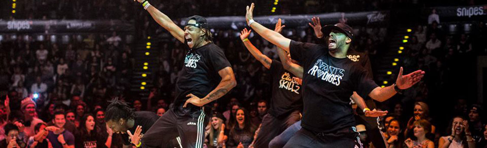
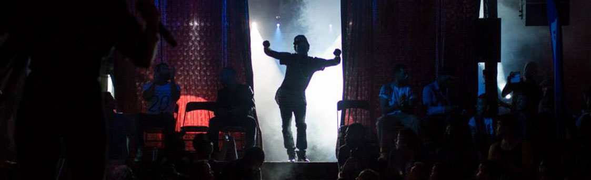
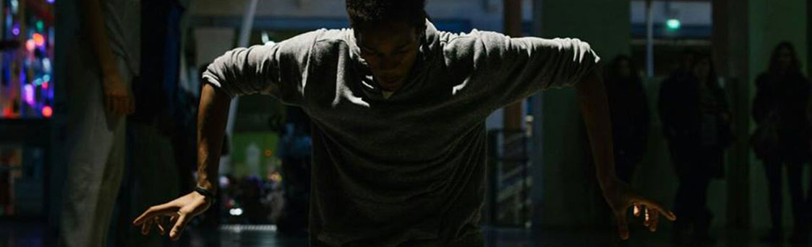
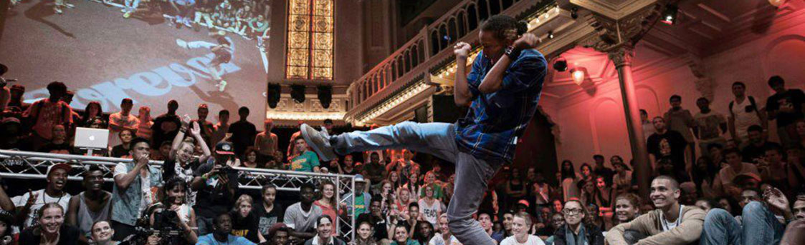

- 

- 
- 
- 
HIP-HOP WAS...

un mouvement, une culture née dans les années 70 dans les quartiers défavorisés du sud du Bronx
le concept a commencé avec le rap, le bboying, le turntablism (djing) et le graff
HIP-HOP IS...
S'exprimer à travers un art, avoir son moment, être soi même ou quelqu'un d'autre

Partager à travers le monde, rencontrer des gens avec le même but, la même passion
Passer de bons moments, s'amuser, dévoiler ses délires
Découvrez à travers ce site les différents évènements où le hip-hop reste toujours undeground ainsi que les enfants prodiges ayant rassemblés les élites de la danse dans un seul et même crew.